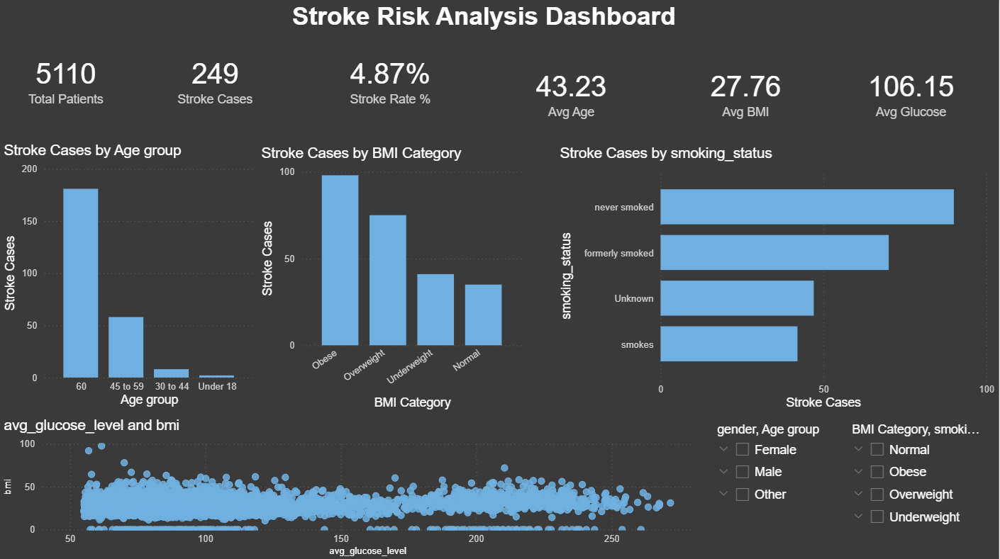

Power BI • DAX • Power Query
Stroke Risk Analytics Dashboard
Built an interactive healthcare dashboard on a dataset of 5,110 patients to analyze stroke risk indicators through KPI tracking, demographic filtering and risk-focused visual analysis.